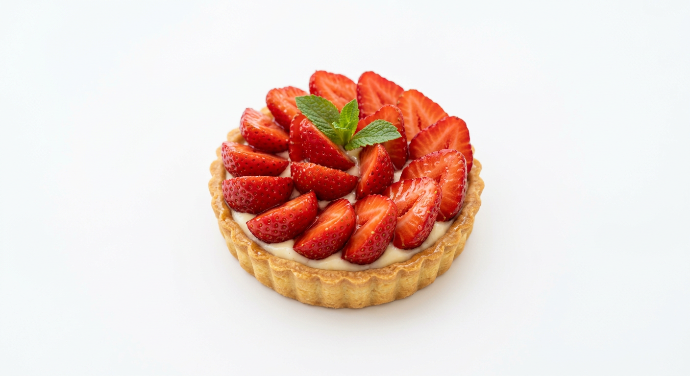
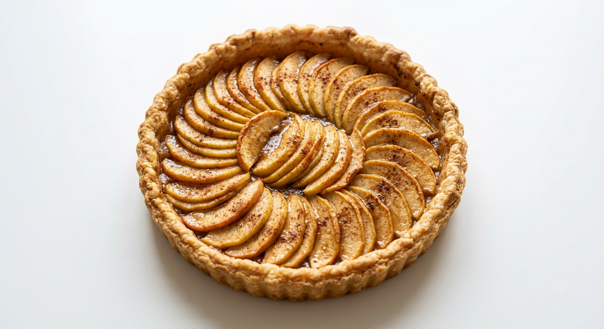
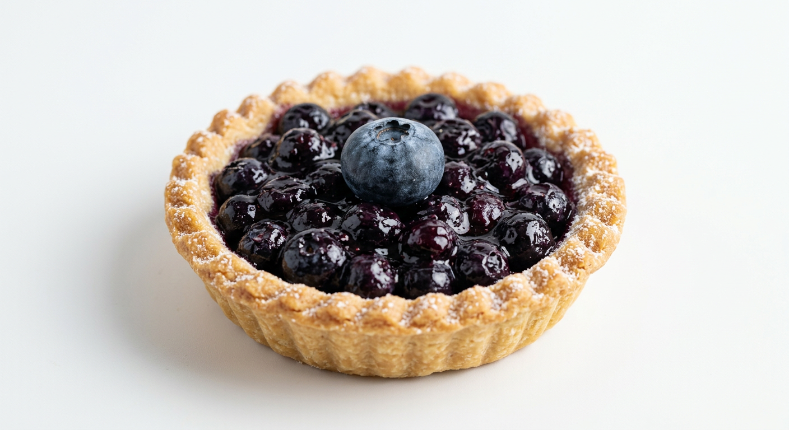
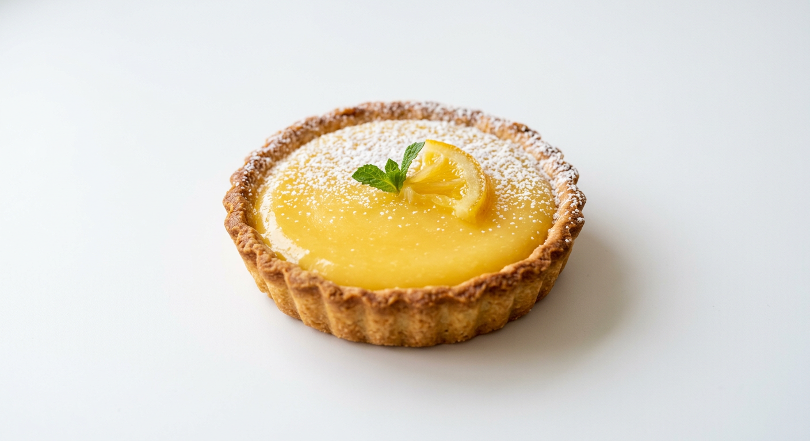

Ingredients
- 1 ¼ cups all purpose flour
- 3 tablespoons sugar
- ½ teaspoon kosher salt
- 6 tablespoons (¾ stick) cold unsalted butter, diced
- 2 tablespoons cold shortening ( recommended: Crisco)
- ¼ cup ice water
- 2 cups Pastry Cream, recipe follows
- 2 pints whole strawberries hulled and halved
- 3 tablespoons shelled pistachios, halved, optional
- 5 extra large egg yolks, room temperature
- ¾ cup sugar
- 3 tablespoons cornstarch
- 1 ½ cups scalded milk
- ½ teaspoon pure vanilla extract
- 1 teaspoon Cognac
- 1 tablespoon unsalted butter
- 1 tablespoons heavy cream
Strawberry Tart (2hr)
Pastry Cream

Direction
Pastry Cream
Ingredients
- 1 package (2 sheets) frozen puff pastry, defrosted
- 4 small (6 ounce) Granny Smith apples
- ¾ cup sugar
- 6 tablespoons (¾ stick) cold unsalted butter, small-diced
- ¾ cup apricot jelly or warm sieved apricot jam
- 3 tablespoons Calvados, rum, or water
Apple Tart (1hr)

Direction
- Preheat the oven to 400 degrees. Line 2 sheet pans with parchment paper.
- Cut each sheet of puff pastry into 4 squares. Divide the pastry between the prepared sheet pans and refrigerate while you prepare the apples.
- Peel the apples and cut them in half through the stem. Remove the stems and cores with a sharp knife and a melon baller.
- Slice the apples crosswise into 1/4-inch-thick slices. Place overlapping slices of apples diagonally across the pastry, and place one slice of apple on each side of the arranged slices.
- Sprinkle the apples evenly with the sugar and dot them with the butter
- Bake for 40 minutes, until the pastry is browned and the edges of the apples start to brown. Don't worry! The apple juices will burn in the pan, but the tarts will be fine!
- When the tarts are done, heat the apricot jelly together with the Calvados until bubbly and brush the apples and pastry completely with the jelly mixture.
- Loosen the tarts with a metal spatula so they don't stick to the paper. Allow to cool and serve warm or at room temperature.
Ingredients
- Cooking spray
- 1 cup all purpose flour, plus 1 tablespoons
- ⅓ cup granulated sugar, plus 1 ½ tablespoons
- ¼ teaspoon kosher salt
- ½ cup ( 1 stick) unsalted butter, cut into pieces
- 2 egg yolks
- 4 cups blueberries
- 1 lemon, zest and 1 tablespoon juice
- ½ teaspoon ground cinnamon
- ½ teaspoon ground cinnamon
- Confectioners sugar, for dusting
Blueberry Tart (1 hr 20 min)

Direction
- Special equipment: a 9 inch springform pan.
- Preheat the oven to 375 degrees F. Coat a 9-inch springform pan with cooking spray.
- Combine 1 cup of the flour, 1 1/2 tablespoons of the granulated sugar and the salt in a food processor and pulse to combine.
- Add the butter and pulse until the mixture resembles coarse meal with some large lumps. Add the egg yolks and pulse until blended.
- Place the dough in the springform pan, and press it evenly against the bottom and about 1 inch up the sides.
- Toss 2 1/2 cups of the berries, the lemon zest, juice, cinnamon, nutmeg, remaining 1 tablespoon flour, and remaining 1/3 cup granulated sugar in a medium bowl.
- Pour the berry mixture into the shell and bake until vigorously bubbling, about 1 hour.
- Remove from the oven and immediately top with the remaining 1 1/2 cups of blueberrie
- Just before serving, dust with confectioners' sugar by tapping it through a fine-mesh sieve. Serve warm or at room temperature.
Ingredients
- 12 tablespoons (1 ½ sticks) unsalted butter, plus more for greasing, at room temperature
- ½ cup sugar
- ½ teaspoon pure vanilla extract
- 1 ¾ cups all purpose flour
- Pinch salt
- 4 lemon, at room temperature
- 1 ½ cups sugar
- ¼ pound (1 stick) unsalted butter, at room temperature
- 4 extra-large eggs, at room temperature
- ⅛ teaspoon salt
Lemon Tart (1 hr 35 min)
Lemon Curd

Direction
- For the tart shell.
- Mix the butter and sugar in the bowl of an electric mixer fitted with a paddle attachment until they are just combined.
- Add the vanilla. In a medium bowl, sift together the flour and salt, then add them to the butter-and-sugar mixture.
- Mix on low speed until the dough starts to come together. Dump onto a surface dusted with flour and shape into a flat disk.
- Press the dough into a 10-inch-round or 9-inch-square false-bottom tart pan, making sure that the finished edge is flat. Chill until firm.
- Meanwhile, preheat the oven to 350 degrees F.
- Butter 1 side of a square of aluminum foil to fit inside the chilled tart and place it, buttered side down, on the pastry.
- Fill with beans or rice. Bake for 20 minutes. Remove the foil and beans, prick the tart all over with the tines of a fork, and bake again for 20 to 25 minutes more, or until lightly browned. Allow to cool to room temperature.
- Remove the zest of the lemons with a vegetable peeler or zester, being careful to avoid the white pith.
- Squeeze the lemons to make 1/2 cup of juice and set the juice aside. Put the zest in a food processor fitted with a steel blade.
- Add the sugar and process for 2 to 3 minutes, until the zest is very finely minced. In the bowl of an electric mixer fitted with a paddle attachment, cream the butter with the sugar and lemon zest.
- Add the eggs, 1 at a time, and then add the lemon juice and salt. Mix until combined.
- Pour the mixture into a 2-quart saucepan and cook over low heat, stirring constantly, until thickened, about 10 minutes.
- The lemon curd will thicken at about 175 degrees F, or just below a simmer. Remove from the heat.
- Fill the tart shell with warm lemon curd and allow to set at room temperature
Lemon Curd
Ingredients
- 2 cups all purpose flour, plus more for dusting
- 3 tablespoons sugar
- ¼ teaspoons salt
- ¾ cup (1 ½ sticks) unsalted butter, cold and cut into small chunks
- 1 large egg, separated
- 2 tablespoons ice water, plus more if needed
- 1 cup heavy cream
- ½ cup milk
- 10 ounces semisweet chocolate, chopped
- ¼ teaspoon salt
- 2 large eggs, at room temperature
Chocolate Tart(3 hr 20 min)
Filling

Direction
- To make the pastry: combine the flour, sugar, and salt in a large mixing bowl.
- Add the butter and mix with a pastry blender or hands until the mixture resembles coarse crumbs. Make a well in the middle of the pastry.
- Combine the egg yolk with the ice water in a small bowl, whisking to blend; pour it into the well and work it in to bind the dough until it holds together without being too wet or sticky.
- Squeeze a small amount together, if it is crumbly, add more ice water, 1 tablespoon at a time. Form the dough into a disk and wrap in plastic; refrigerate for at least 30 minutes.
- Roll out the pastry on a lightly floured surface into a 12-inch circle, about 1/4-inch thick. Carefully roll the dough up onto the pin (this may take a little practice) and lay it inside a 9-inch tart pan with a removable bottom.
- Press the dough into the pan so it fits tightly; press the edges into the sides of the pan.t is important to press the dough evenly into every nook and corner of the ring, especially the scalloped edges.
- Shave off the excess hanging dough with a knife. Put the tart in the refrigerator for 15 minutes to relax.
- Preheat the oven to 350 degrees F
- Place the tart pan on a sturdy cookie sheet so it will be easy to move in and out of the oven.
- Line the tart with aluminum foil and add pie weights or dried beans to keep the sides of the tart from buckling.
- Bake for 30 minutes, then remove the foil and weights. Using a pastry brush, lightly coat the crust with a beaten egg white.
- Return to the oven and continue to bake for another 8 minutes until the tart is golden in color, but not brown. Remember, the tart will be cooked again with the filling.
- It should be cooked but light in color so that it will not burn on the second bake. Set aside to cool and lower the oven temperature to 325 degrees F.
- Heat the heavy cream and milk in a pot over medium-low flame, until it simmers slightly around the edges.
- Remove from the heat; add the chopped chocolate and stir until melted and smoothed out.
- Add the sugar and salt and whisk until well incorporated. Beat the eggs in a small bowl until blended, and add them to the chocolate mixture, stirring until completely blended.
- Pour the filling into the cooled tart shell and bake at 325 degrees F for 15 to 20 minutes until the filling is set and the surface is glossy
- If you see any bubbles or cracks forming on the surface, take the tart out right away - that means it is beginning to become over-baked. Cool before cutting
Filling
Ingredients
- ( special equipment: a 10-inch tart pan with a removable bottom; pie weights)
- 1 stick ( 8 tablespoons) unsalted butter, at room temperature
- ½ cup sugar
- ¼ teaspoon kosher salt
- 1 large egg
- 1 tablespoon heavy cream
- 1 ½ cups all purpose flour
- 8 ounces cream cheese, at room temperature
- ½ cup sugar
- 1 teaspoon vanilla extract
- 1 cup heavy cream
- 4 cups mixed berries, such as blueberries, raspberries and strawberries
- ½ cup apricot preserves
Mixed Tart(1 hr 55 min)
Filling

Direction
- For the crust: In a large bowl, beat together the butter and sugar with an electric mixer on medium-high speed until light and fluffy, about 3 minutes.
- Add the salt, egg, and cream; beat until incorporated. Add the flour and beat until a dough comes together.
- Form the dough into a disc and then press it evenly into the bottom and up the sides of a 10-inch tart pan with a removable bottom; if necessary, use a piece of plastic wrap to help keep the dough from sticking.
- Refrigerate until firm, about 1 hour, or freeze for 30 minutes.
- Preheat the oven to 350 degrees F.
- Carefully remove the foil and pie weights, and continue to bake until the crust is golden brown all over, about 20 minutes more. Cool completely.
- In a large bowl, combine the cream cheese, sugar, and vanilla, and beat with an electric mixer until soft and very creamy, 1 to 2 minutes.
- Add the cream and continue beating until the mixture holds stiff peaks, stopping occasionally to scrape the bowl with a rubber spatula, 2 to 3 minutes more.
- Spoon the cream cheese mixture into the cooled tart shell and smooth with an offset spatula. Top with the berries.
- Combine the apricot preserves and a splash of water in a small bowl and microwave until warm, about 45 seconds.
- Strain through a sieve into another bowl. Gently brush or spoon the apricot glaze over the berries.
- Serve the tart immediately, or refrigerate for up to 3 hours.
Filling
Ingredients
- ( special equipment: a 10-inch tart pan with a removable bottom; pie weights)
- ¾ cup unsalted butter at room temperature
- ¼ teaspoons salt
- ½ teaspoon pure vanilla extract
- 1 ¾ cups all-purpose flour
- Pinch salt
- 1 cup good raspberry preserves
- 1 ½ pints fresh raspberries ( 3 packages)
Raspberry Tart(2 hr 15 min)
Filling

Direction
- Preheat oven to 350 degrees.
- In the bowl of an electric mixer fitted with a paddle attachment, mix the butter and sugar until they are just combined. Add the vanilla.
- In a medium bowl, sift together the flour and salt, then add them to the butter-and-sugar mixture.
- Mix on low speed until the dough starts to come together. Dump onto a surface dusted with flour and shape into a flat disk.
- Press the dough into a 10-inch-round or 9-inch-square false-bottom tart pan, making sure that the finished edge is flat. Chill until firm.
- Butter one side of a square of aluminum foil to fit inside the tart and place it, buttered side down, on the pastry.
- Fill with beans or rice. Bake for 20 minutes. Remove the foil and beans, prick the tart all over with the tines of a fork, and bake again for 20 to 25 minutes more, or until lightly browned.
- Allow to cool to room temperature.
- Spread the tart with raspberry preserves and place the raspberries, stem end down, in concentric circles.
Ingredients
- 1 ½ cups plus 2 tablespoons all purpose flour
- ¾ teaspoon kosher salt
- ¾ plus 1 teaspoon sugar
- ¼ cup mild olive oil
- 2 tablespoons whole milk
- ⅓ tablespoons almond extract
- 2 tablespoons cold unsalted butter
- 3 small ripe peaches ( up to 5), pitted and thinly sliced ( about ⅓ inch wide)
Peach Tart

Direction
- Heat the oven to 425 degrees.
- In a mixing bowl, stir together 1 1/2 cups flour, 1/2 teaspoon salt, and 1 teaspoon sugar. Stirring enables the salt and sugar to sift through the flour, so you don't need to sift it in advance.
- In a small bowl, whisk together the oils, milk, and almond extract. Pour this mixture into the flour mixture and mix gently with a fork, just enough to dampen; do not overwork it.
- Then, transfer the dough to an 11-inch tart pan (you can use a smaller one if needed), and use your hands to pat out the dough so it covers the bottom of the pan, pushing it up the sides to meet the edge.
- This will work if you pat firmly and confidently, but not if you curl your fingertips into the dough. It should be about 1/ 8-inch thick all around; trim and discard excess dough.
- In a bowl, combine 3/4 cup sugar, 2 tablespoons flour, 1/4 teaspoon salt, and the butter. (If your peaches are especially juicy, add 1 additional tablespoon of flour.)
- Using your fingers, pinch the butter into the dry ingredients until crumbly, with a mixture of fine granules and tiny pebbles.
- Starting on the outside, arrange the peaches overlapping in a concentric circle over the pastry; fill in the center in whatever pattern makes sense.
- The peaches should fit snugly. Sprinkle the pebbly butter mixture over top (it will seem like a lot).
- Bake for 35 to 45 minutes, until shiny, thick bubbles begin enveloping the fruit, and the crust is slightly brown.
- Cool on a rack. Serve warm or room temperature, preferably with generous dollops of whipped cream.